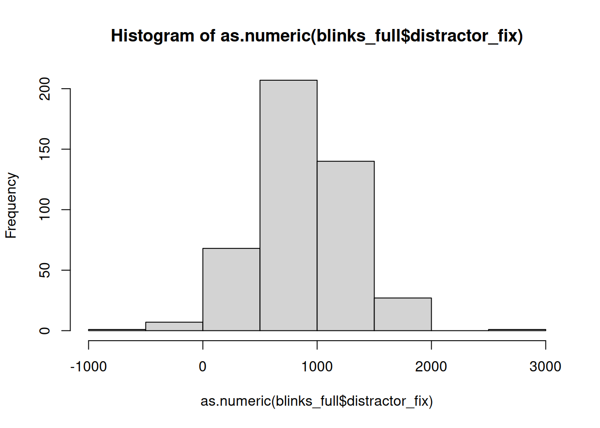
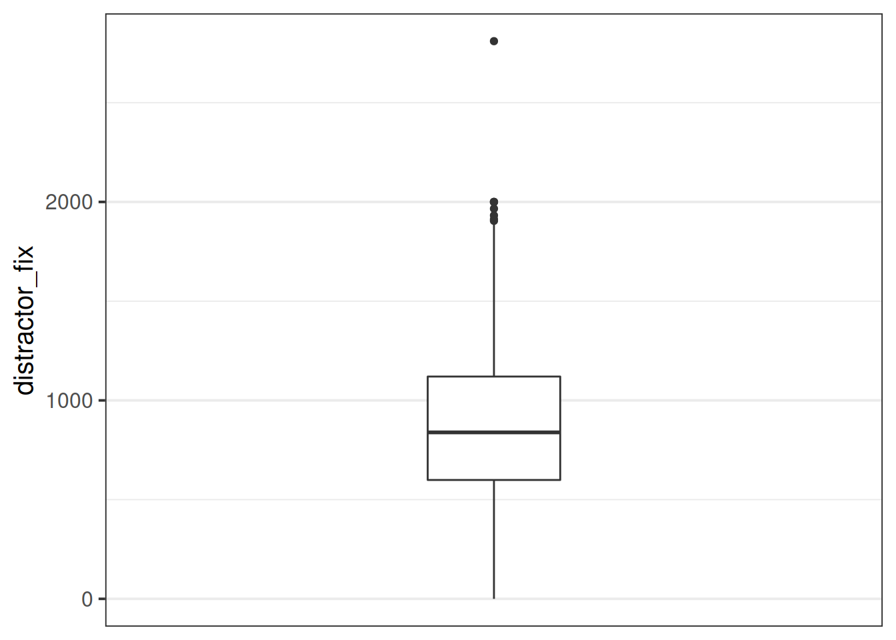
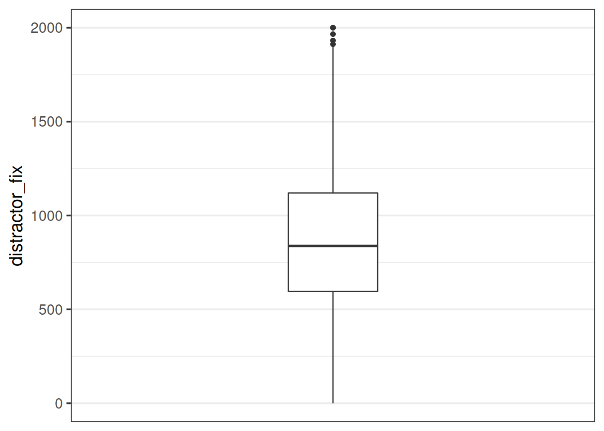
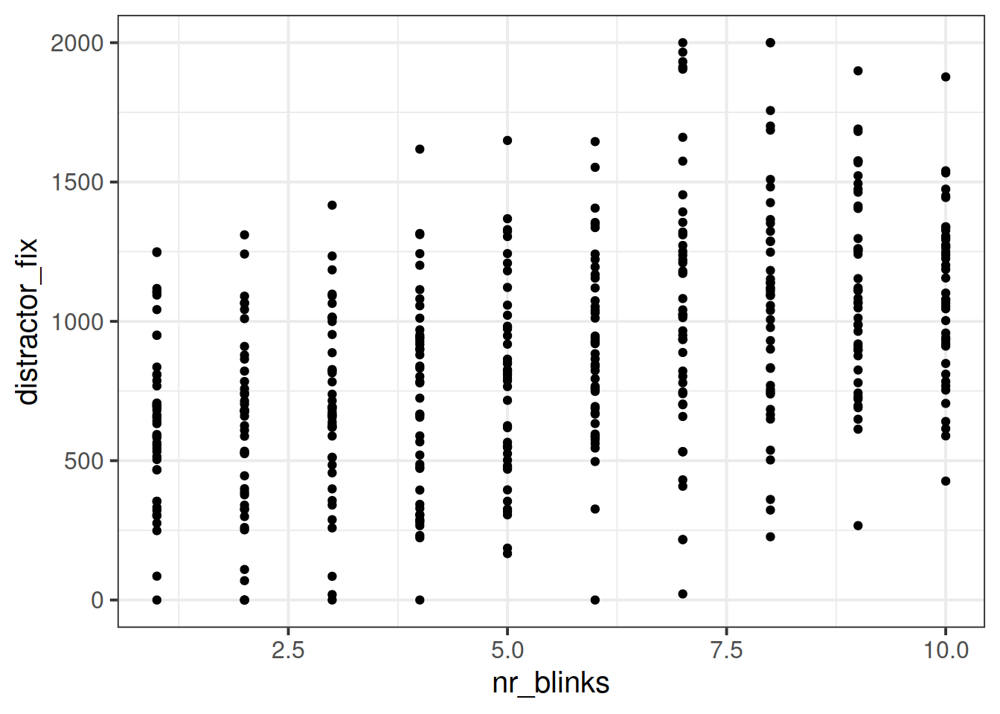

Dealing with messy data
This week we’re going to take a little detour away from statistics to get some practice wrangling and cleaning data in R.
The solutions are available immediately as these exercises are more geared towards coding problems rather than conceptual statistics problems, so it may be that seeing some example code will be more helpful.
Don’t worry about the trying to remember all of the new R functions introduced this week - there are a lot. Use them as a means of learning about some of the different ways of doing things in R.
The 80/20 Rule
In many projects (both in academic research & in other sectors), 80 percent of the time will be spent cleaning and organising data, and only 20% will be spent actually conducting statistical analyses1.
The Data
The data we’re going to look at now is from an experiment on language comprehension, looking at whether people perceive blinking as a sign of lying.
Research Question: Is the rate of blinking during speech interpreted as a sign of dishonesty (in the context of a lie-detection game)?
Participants were informed that they were going to take part in a lie-detection game. They were presented with audiovisual recordings of a speaker stating behind which of two objects (displayed on screen) there was hidden treasure. Utterances took the form of “The treasure is behind the [target name]”.
Over 20 trials, participants were tasked with using the mouse to click on the object they believed the treasure to be behind. They were told that the speaker in the video was attempting to mislead them, meaning that sometimes they told the truth, and sometimes they lied. Crucially, in the videos presented of the speaker producing the utterances, we manipulated the number of times the speaker blinked (from 1 to 10 times). Participants eyes were tracked for the duration of the experiment, with the time spent looking at either object taken as an implicit indication of perceiving a truthful utterance (in which the participant looks at and clicks on the ‘target object’ (the one identified by the speaker as hiding the treasure)) or a dishonest one (in which the participant would look at and click on the alternative ‘distractor’ object).
In this data, each participant is a row, and the information about what video is presented in each trial are presented in separate columns for each trial. The first bit of the data looks like this:
| 1 | subject_1 | /files/vids/blinks_1.mp4 | /files/vids/blinsk_8.mp4 | … |
| 2 | subject_2 | /files/vids/blinks_2.mp4 | /files/vids/blinks_4.mp4 | … |
| 3 | subject_3 | /files/vids/blinks_4.mp4 | /files/vids/blinks_5.mp4 | … |
| 4 | subject_4 | /files/vids/blinks_4.mp4 | /files/vids/blinks_7.mp4 | … |
| 5 | subject_5 | /files/vids/blinks_1.mp4 | /files/vids/blinks_4.mp4 | … |
| 6 | subject_6 | /files/vids/blinks_2.mp4 | /files/vids/blinks_3.mp4 | … |
| … | … | … | … | … |
| … | … | … | … | … |
In contrast to the blink_setup.csv data, in this data each trial is a row, so we have 20 rows per participant.
| variable_names | description |
|---|---|
| sub | Participant number |
| trial_no | Trial number |
| distractor_fix | Time spent looking at distractor object (measured in milliseconds from onset of noun phrase) |
| rt | Time taken to click on an object (measured in milliseconds from the onset of the noun phrase |
| sub | trial_no | distractor_fix | rt |
|---|---|---|---|
| 1 | 1 | 503.990657311976 | 2812 |
| 1 | 2 | 2810.1367654 | 2974 |
| 1 | 3 | 706.739099152984 | 2257 |
| 1 | 4 | NA | NA |
| 1 | 5 | 223.327680772201 | 4546 |
| 1 | 6 | NA | NA |
| … | … | … | … |
| … | … | … | … |
Different Data Formats
Data can come in lots of different formats, meaning that we need lots of different ways to read data into R. Below is some information on some of the more common functions for reading and writing different types of data.
Text based files
| filetype | description | reading | writing |
|---|---|---|---|
| .csv | comma separated values | tidyverse - read_csv()read.csv()read.table(..., sep = ",") |
tidyverse - write_csv()write.csv()write.table(..., sep=",") |
| .tsv | tab separated values | tidyverse - read_tsv()read.table(..., sep = "\t") |
tidyverse - write_tsv()write.table(..., sep = "\t") |
| .txt | anything-separated values! | read.table(..., sep = ...) |
write.table(..., sep = ...) |
R files
| filetype | description | reading | writing |
|---|---|---|---|
| .RDS | 1 file = a single R object | readRDS() |
saveRDS() |
| .RData | 1 file = a collection of R objects | load() |
save()save.image() - to save all objects in the environment) |
Excel files
The package readxl provides a variety of functions for reading in different types of Microsoft Excel spreadsheet, such as read_excel(), read_xls(), read_xlsx().
Other software
The package haven provides functions for files which have been saved from other statistical software, for instance with read_spss()/read_sav() and read_sas() for files from SPSS and SAS.
Google sheets
The googlesheets4 package can read in data directly from a spreadsheet stored on google drive. You simply find the id of the sheet (it’s the big long string of numbers & letters in the url of your google sheet), and pass it to read_sheet().
It will prompt you to authenticate your account via your browser, but it’s really easy!
Read in the two data-sets. Take care to look at the file extension (e.g., .csv, .tsv, .xlsx) as indicators of what function to try.
Make sure you assign them identifiable names.
Once you’ve loaded the data-set, take a look at them using functions like summary(), str(), dim()/nrow(), or viewing them by clicking on them in the environment.
Hints:
- Some functions like
read_excel()don’t allow you to download directly from a url, like we have been doing in the previous weeks.- Solution 1:
- Download the data to your computer
- upload to the rstudio server if you are using it
- Direct the function to read it from the place you stored it.
- Solution 2:
- Make R download the data directly to somewhere in your working directory (see
download.file()).
- Make R download the data directly to somewhere in your working directory (see
- Solution 1:
- Do both the data-sets have column names? By default R will assume the first row is the name of the column. Look in the help documentation to see how to stop this from happening.
library(tidyverse)
library(readxl)
download.file('https://uoepsy.github.io/data/blink_eyegaze.xlsx', 'data/blink_eyegaze.xlsx', mode="wb")
eyedata <- read_excel(path = 'data/blink_eyegaze.xlsx')
setupdata <- read_csv("https://uoepsy.github.io/data/blink_setup.csv", col_names = FALSE)
Renaming Columns
You can access the column names from a data-set using names() or colnames().
names(data)
colnames(data)And we can easily rename these using indexing:
#name the third column "peppapig"
names(data)[3]<-"peppapig"Or in tidyverse, using rename():
data %>%
rename(newname = currentname)Problem
The blink_setup.csv file doesn’t have any column names!
We know that there are 20 trials for each participant, and we can see that the 2nd column has information about which subject it is.
Columns 3:22 are trials 1 to 20.
head(setupdata)## X1 X2 X3 ...
## 1 1 subject_1 /files/vids/blinks_1.mp4 ...
## 2 2 subject_2 /files/vids/blinks_2.mp4 ...
## 3 3 subject_3 /files/vids/blinks_4.mp4 ...
## 4 4 subject_4 /files/vids/blinks_4.mp4 ...
## 5 5 subject_5 /files/vids/blinks_1.mp4 ...
## 6 6 subject_6 /files/vids/blinks_2.mp4 ...
## 7 ... ... ... ...
## 8 ... ... ... ...Task
- Remove the first column
- Rename columns 2 to 22 with sensible names.
Hints:
names(setupdata) # what are the names
names(setupdata)[2] # what is the 2nd name
names(setupdata) <- c("...", "...", "...",..) # set the namesc("kermit", paste("peppapig", 1:3, sep="_"))## [1] "kermit" "peppapig_1" "peppapig_2" "peppapig_3"
remove the first column
setupdata <- setupdata[,-1]Set the names
names(setupdata) <- c("sub",paste("trial", 1:20, sep = "_"))Check:
head(setupdata)## sub trial_1 ...
## 1 subject_1 /files/vids/blinks_1.mp4 ...
## 2 subject_2 /files/vids/blinks_2.mp4 ...
## 3 subject_3 /files/vids/blinks_4.mp4 ...
## 4 subject_4 /files/vids/blinks_4.mp4 ...
## 5 subject_5 /files/vids/blinks_1.mp4 ...
## 6 subject_6 /files/vids/blinks_2.mp4 ...
## 7 ... ... ...
## 8 ... ... ...
Reshaping data
Pivot!
One of the more confusing things to get to grips with is the idea of reshaping a dataframe.
For different reasons, you might sometimes want to have data in wide, or in long format.

Figure 1: Source: https://fromthebottomoftheheap.net/2019/10/25/pivoting-tidily/
When the data is wide, we can make it long using pivot_longer(). When we make data longer, we’re essentially making lots of columns into 2 longer columns. Above, in the animation, the wide variable x, y and z go into a new longer column called name that specifies which (x/y/z) it came from, and the values get put into the val column.
The animation takes a shortcut in the code it displays above, but you could also use pivot_longer(c(x,y,z), names_to = "name", values_to = "val"). To reverse this, and put it back to being wide, we tell R which columns to take the names and values from: pivot_wider(names_from = name, values_from = val).
Problem
The blink_setup.csv file has the data in a different shape to the blink_eyegaze.xlsx file.
- blink_setup.csv : one row per participant
- blink_eyegaze.xlsx : one row per trial
Task
Reshape the data to make it so that there is one row per trial.
Hint:
- in the tidyverse functions, you can specify all columns between column x and column z by using the colon,
x:z.
(Note that this will depend on what you called your columns in the previous question - we just called them “trial_1”, … , “trial_20”).
setuplong <-
setupdata %>%
pivot_longer(trial_1:trial_20, names_to = "trial_number", values_to = "video")
setuplong## # A tibble: 460 x 3
## sub trial_number video
## <chr> <chr> <chr>
## 1 subject_1 trial_1 /files/vids/blinks_1.mp4
## 2 subject_1 trial_2 /files/vids/blinsk_8.mp4
## 3 subject_1 trial_3 /files/vids/blinks_1.mp4
## 4 subject_1 trial_4 /files/vids/blinks_5.mp4
## 5 subject_1 trial_5 /files/vids/blinks_4.mp4
## 6 subject_1 trial_6 /files/vids/blinks_10.mp4
## 7 subject_1 trial_7 /files/vids/blinks_1.mp4
## 8 subject_1 trial_8 /files/vids/blinks_5.mp4
## 9 subject_1 trial_9 /files/vids/blinks_6.mp4
## 10 subject_1 trial_10 /files/vids/blinks_4.mp4
## # … with 450 more rows
Dealing with character strings
There are loads of functions we can use to do various things with character strings in R.
Here are a few examples:
Problem
If you look at what data was captured by the software to indicate which video was used in each trial, there is a lot of unnecessary data there. The number of the filename indicates how many blinks are in the video. This is the only bit of information we want.
head(setuplong$video)## [1] "/files/vids/blinks_1.mp4" "/files/vids/blinsk_8.mp4"
## [3] "/files/vids/blinks_1.mp4" "/files/vids/blinks_5.mp4"
## [5] "/files/vids/blinks_4.mp4" "/files/vids/blinks_10.mp4"Task
- In your (now reshaped to long) blink_setup.csv data, make a new, or edit an existing column, which is a numeric variable containing the number of blinks presented in the video in each trial
Hints:
there are lots of different ways you could do this.
you can substitute out multiple different strings by separating them with the
|symbol:gsub("dog|cat", "horse", "I have a dog and a cat and the dogs name is Graham")## [1] "I have a horse and a horse and the horses name is Graham"
setuplong <- setuplong %>%
mutate(
nr_blinks = as.numeric(gsub("/files/vids/|blinks_|blinsk_|.mp4","",video))
)
setuplong## # A tibble: 460 x 4
## sub trial_number video nr_blinks
## <chr> <chr> <chr> <dbl>
## 1 subject_1 trial_1 /files/vids/blinks_1.mp4 1
## 2 subject_1 trial_2 /files/vids/blinsk_8.mp4 8
## 3 subject_1 trial_3 /files/vids/blinks_1.mp4 1
## 4 subject_1 trial_4 /files/vids/blinks_5.mp4 5
## 5 subject_1 trial_5 /files/vids/blinks_4.mp4 4
## 6 subject_1 trial_6 /files/vids/blinks_10.mp4 10
## 7 subject_1 trial_7 /files/vids/blinks_1.mp4 1
## 8 subject_1 trial_8 /files/vids/blinks_5.mp4 5
## 9 subject_1 trial_9 /files/vids/blinks_6.mp4 6
## 10 subject_1 trial_10 /files/vids/blinks_4.mp4 4
## # … with 450 more rows
Joining/merging
Now comes a fun bit.
Recall that the research question is interested in the relationship between the number of times the speaker was seen to blink, and the time the participants spent looking at the distractor object (indicating perceived dishonesty).
You may have noticed that these variables are currently in different data-sets! The blink_setup.csv contains information about the numbers of blinks in the videos, and the blink_eyegaze.xlsx contains the data on the fixations.
Solution: we need to join them together!
Note that because both data-sets contain information on participant number and trial number, which uniquely identifies each observation, we can join them together matching on these variables!
There are lots of different ways to join data-sets, depending on whether we want to keep rows from one data-set or the other, or keep only those in both data-sets etc.
Figure 2: Check out the help documentation for them all using ?full_join.
Problem
Variables are in different data-sets.
Task
- Join the two data-sets (the reshaped-to-long blink_setup.csv data, and the blink_eyegaze.xlsx data) together, and store the joined data in a new object (you can use your own name, but the solutions will use the name
blinks_full).
Hints
We want to match the observations based on two columns which are present in each data-set, indicating which participant, and which trial.
- Remember that R doesn’t have your intelligence - it doesn’t know that in one data-set the variable is called e.g.,
trial_noand in the other it is calledtrial_number.
- Another thing which R doesn’t know is that “subject_1” in setup data is the same participant as “1” in the eye gaze data. It needs to match the same symbols, and what is more, it needs the variables to be the same type (character, numeric, factor etc).
- you might want to make use of the skills you learned for manipulating character strings.
In this solution, let’s build up a sequence step by step. Work through the steps, adding lines of code each time. Between each step, run the code to quickly see what the output looks like at each step.
First, let’s see how we can remove the “subject_” from “subject_1” etc..
setuplong %>% mutate( sub = gsub("subject_","",sub) )But we also want it to be numeric, to match the
subvariable in the eyegaze data, so let’s edit it to:setuplong %>% mutate( sub = as.numeric(gsub("subject_","",sub)) )We’ll also need to do the same for the
trial_numbervariable, so let’s add that line too:setuplong %>% mutate( sub = as.numeric(gsub("subject_","",sub)), trial_number = as.numeric(gsub("trial_","",trial_number)) )And then, we’ll note that we need to have the same name for variables indicating trial number in both data-sets, so lets rename it:
setuplong %>% mutate( sub = as.numeric(gsub("subject_","",sub)), trial_number = as.numeric(gsub("trial_","",trial_number)) ) %>% rename(trial_no = trial_number)And now… add the join!
setuplong %>% mutate( sub = as.numeric(gsub("subject_","",sub)), trial_number = as.numeric(gsub("trial_","",trial_number)) ) %>% rename(trial_no = trial_number) %>% full_join(x = ., y = eyedata)NOTE the solution has
x = ., y = eyedatato make it clear that we are ‘piping in’ (using%>%) the thing coming out of the previous lines of code, and putting it where the.is..... %>% full_join(eyedata)would do the same.
We usefull_joinhere because we want to keep all the data, butleft_joinwould do the same.right_joinwould be slightly different, because there are 3 observations in the setup data (when reshaped to long, n = 460) which aren’t in the eye gaze data (n = 457). You can see which ones they are by usinganti_join.
Finally - we need to give the whole output a name to store it in our environment!
blinks_full <- setuplong %>% mutate( sub = as.numeric(gsub("subject_","",sub)), trial_number = as.numeric(gsub("trial_","",trial_number)) ) %>% rename(trial_no = trial_number) %>% full_join(x = ., y = eyedata)
Impossible Values
It’s important to check that there are no values in the data which are impossible, given what you know about how the data was measured. This is where exploratory plots and descriptive statistics come in handy.
hist(as.numeric(blinks_full$distractor_fix))
In some trials, participants spent less that 0ms fixating on the distractor object!?!?!?
We have a couple of options as to how to deal with them.
- Delete the entire row
- Change the specific entry/s in that variable to be
NA(Not Applicable) - this has the benefit of keeping the rows should we consider those row to have a valid observation in other variables (for instance thert- reaction time?)
Some of the tools we learned in Week 1 will come in handy here.
Problem
Some impossible values in the distractor_fix variable.
Task
- Assign the entries of the distractor_fix variable which are < 0 to be NA.
- Are there any other impossible values (or combinations of values) in the data?
Hints:
While you’re there, why not convert any variables to the right type (numeric, factor, etc).
We might not have come across this before, but there is a really useful function called
ifelse().
Play around with the below code to learn:tibble(x = 1:10) %>% mutate( new_variable = ifelse(x>5,1,0), another_new_variable = ifelse(x>5,"peppapig","kermit"), morevariables = ifelse(another_new_variable == "kermit","kermit the frog", another_new_variable) )
Below we’ve taken similar steps for both the distractor_fix and rt variables. Neither can be <0 or >5000.
However, we know that the distractor_fix variable has no entries >5000 (because of the histogram above).
blinks_full <-
blinks_full %>%
mutate(
distractor_fix = as.numeric(distractor_fix),
distractor_fix = ifelse(distractor_fix<0, NA, distractor_fix),
rt = ifelse(as.numeric(rt)>5000 | as.numeric(rt)<0, NA, as.numeric(rt))
)Note how two steps (making it numeric, and replacing values with NAs) are combined for the rt variable. Note also how we have specified that we replace with NAs entries which meet either on condition (>5000) or (using |) another (<0).
Missing Data in R
Missing data can be a big problem for statistics. For those of you thinking of taking Multivariate Statistics & Methodology in R next semester, you can look forward to discussions around this sort of issue.
Here, however, we are simply going to discuss the practicalities of how to make R code work when some of your values are NAs.
Consider:
vec <- c(1,2,3,4,NA)
mean(vec)## [1] NAThink about why this is:
\[
\text{mean(vec)} = \frac{1+2+3+4+\text{NA}}{5} = \frac{\text{??}}{5} = \text{??}
\]
There are numerous different ways that functions in R cope with missing values, but if you’re ever in doubt, try na.rm = TRUE. This will basically tell R to “remove the NAs before doing the calculation”.
mean(vec, na.rm=T)## [1] 2.5Other functions include na.omit(), which remove any row with has an NA anywhere in it:
complete_data <- na.omit(data)Outliers
Outliers are the extreme - but plausible - values in variables. There is no one way to identify what is extreme enough to consider and outlier, nor is there one way to handle them.
Some outliers could be considered important observations which we would not want to exclude. However, being an outlier can (but not always) result in an observation exerting too great an influence on our analysis.
Make a bloxplot of the distractor_fix variable. Does it look like there might be any outliers?
The last line of this is there just because I personally don’t like the default look of geom_boxplot where it is really wide, so this line changes the limits of the x-axis (and also removes the ticks).
ggplot(data = blinks_full, aes(y = distractor_fix)) +
geom_boxplot()+
scale_x_continuous(limits = c(-2,2), breaks = NULL)
It looks like there are possibly some outliers at the upper end of the distribution. One of them looks really quite anomalous!
Some common approaches to identifying outliers:
- observations which are \(> 3\) (sometimes \(> 2.5\)) standard deviations away from the mean.
- observations greater than \(1.5 \times IQR\) below the first quartile \(Q_1\) or above the third quartile \(Q_3\).
Some common approaches to handling outliers:
- Exclude now - for instance, set as NA
- “Winsorize” - set to a specified percentile. For example, all observations below the 5th percentile set to the 5th percentile, and all observations above the 95th percentile set to the 95th percentile
- Exclude from analysis later, based on measures of influence (we’ll learn about this in future weeks)
Writing your own function
We already saw some custom functions in the first week, where we made some called dice() and wdice().
Can you write a function which, given a vector, returns TRUE if it is an outlier and FALSE if it is not, based on the criterion of being \(>3\) sd away from the mean.
outliers <- function(obs){
...
...
...
}
If you attempted question A8 above, can you edit your outliers() function to make it work with vectors which include NAs?
outliers <- function(obs, x = 3){
abs(obs - mean(obs, na.rm=TRUE)) > (x * sd(obs, na.rm=TRUE))
}
If you skipped questions A8 and A9, then copy and run this code into your .Rmd document. It will give you a function which takes a vector and returns TRUEs and FALSEs based on whether each entry is greater than 3 standard deviations from the mean.
outliers <- function(obs, x = 3){
abs(obs - mean(obs, na.rm=TRUE)) > (x * sd(obs, na.rm=TRUE))
}Problem
Possible outliers in the distractor_fix variable.
Task
- Replace any values of the
distractor_fixvariable which are \(>3\) standard deviations from the mean withNA.
- Make a new boxplot of the variable
blinks_full$distractor_fix[outliers(blinks_full$distractor_fix)]<- NA
ggplot(data = blinks_full, aes(y = distractor_fix)) +
geom_boxplot()+
scale_x_continuous(limits = c(-2,2), breaks = NULL)
Build a model!
We’re now finally getting to the analysis. As we said earlier, this can sometimes be very straightforward in comparison to the amount of effort involved in cleaning data.
Recall
We’re interested in whether the perception of whether or not a speaker is lying about the location of some hidden treasure (as measured by the pattern of eye fixations towards the object not referred to by the speaker) is influenced by the number of times the speaker is seen to blink while producing utterance.
Plot the relationship between the two variables you think will be best used to answer this question.
ggplot(blinks_full, aes(x=nr_blinks, y = distractor_fix))+
geom_point()
We’ve seen briefly in Week 5, as well as in the lecture, the form of a linear regression model. Below, we have stated the form of the model we will use to answer our research question. We’ll cover what the symbols mean in more detail next week.
\[ \text{Fixation time to distractor} = \beta_0 + \beta_1 \ \text{Number of blinks} + \epsilon \\ \quad \\ \text{where} \quad \epsilon \sim N(0, \sigma) \text{ independently} \]
- Fit the linear model to the data using the
lm()function and store the output in the environment as an object namedblinks_mdl.
The syntax of thelm()function is:lm(dependent variable ~ 1 + explanatory variable,
data = dataframe) - Take a look around the output of
summary(blinks_mdl). There’s a lot of it, and we’re going to go through what all the different bits mean in the coming weeks!
blinks_mdl <- lm(distractor_fix ~ nr_blinks, data=blinks_full)
summary(blinks_mdl)##
## Call:
## lm(formula = distractor_fix ~ nr_blinks, data = blinks_full)
##
## Residuals:
## Min 1Q Median 3Q Max
## -944.47 -253.55 5.58 217.74 1033.81
##
## Coefficients:
## Estimate Std. Error t value Pr(>|t|)
## (Intercept) 517.296 36.076 14.34 <2e-16 ***
## nr_blinks 64.128 5.808 11.04 <2e-16 ***
## ---
## Signif. codes: 0 '***' 0.001 '**' 0.01 '*' 0.05 '.' 0.1 ' ' 1
##
## Residual standard error: 355.1 on 447 degrees of freedom
## (11 observations deleted due to missingness)
## Multiple R-squared: 0.2143, Adjusted R-squared: 0.2126
## F-statistic: 121.9 on 1 and 447 DF, p-value: < 2.2e-16
A well designed study with a well-thought through data collection process can go a long way to remedy this!↩︎

This workbook was written by Josiah King, Umberto Noe, and Martin Corley, and is licensed under a Creative Commons Attribution 4.0 International License.